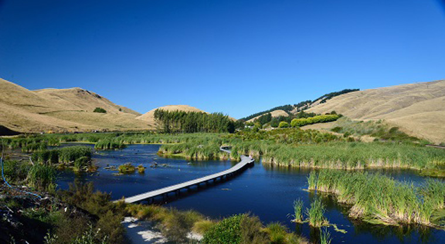

Wetlands You Can Visit
Here are some wetlands you can visit in Auckland and also throughout New Zealand.
Auckland Wetlands
A guide to Auckland's wetland brochure
Tawharanui Regional Park is a wildlife sanctuary and coastal farm park protected by a predator-proof fence.
Waiatarua Wetland is a 20 hectare wetland in Meadowbank, Central Auckland has been recently restored by Auckland City Council following drainage in the 1930's.
Whatipu Dunes is a spectacular wilderness area, Whatipu is an extensive (1 km wide) sand flat on Auckland’s rugged west coast.
National Wetlands
Waihora Forest Lagoon (Waikato) is a seasonal lagoon surrounded by tall mature kahikatea forest.

Pekapeka Regional Park (near Hastings) This wetland covers 98 hectares and has been the site of a major restoration project since the 90s aimed to improve wetland capacity to regulate flood waters and increase the natural biodiversity.
Pupu Springs (Takaka) are the largest freshwater springs in NZ known for its clear fresh water.
Hey, why not get involved with protecting our precious wetlands